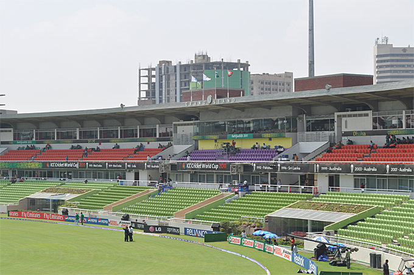

IPL 2027: छह टीमों के कप्तान तय, तीन फ्रेंचाइजी के नेतृत्व को लेकर स्थिति साफ नहीं
आईपीएल 2027 के मिनी ऑक्शन से पहले छह टीमों के कप्तान लगभग तय हो चुके हैं, जबकि तीन फ्रेंचाइजी में नेतृत्व को लेकर स्थिति अभी स्पष्ट नहीं है। मुंबई इंडियंस आज अपने नए कप्तान की घोषणा करेगी।

इंडियन प्रीमियर लीग (आईपीएल) 2027 के लिए अगले महीने गोवा में मिनी ऑक्शन होना है। इससे पहले सभी 10 फ्रेंचाइजी ने अपनी रिटेंशन लिस्ट जारी कर दी है। लीग की छह टीमों के कप्तान लगभग तय हैं, जबकि तीन टीमों में नेतृत्व को लेकर तस्वीर साफ होना बाकी है। मुंबई इंडियंस आज शाम अपने कप्तान के नाम का ऐलान करेगी, जिसे लेकर कई तरह की अटकलें लगाई जा रही हैं।
रॉयल चैलेंजर्स बेंगलुरु से रजत पाटीदार, चेन्नई सुपर किंग्स से ऋतुराज गायकवाड़, गुजरात टाइटंस से शुभमन गिल, पंजाब किंग्स से श्रेयस अय्यर, राजस्थान रॉयल्स से रियान पराग और सनराइजर्स हैदराबाद से पैट कमिंस का कप्तान रहना लगभग तय माना जा रहा है। वहीं, दिल्ली कैपिटल्स, कोलकाता नाइट राइडर्स और लखनऊ सुपर जायंट्स में कप्तानी को लेकर स्थिति अभी स्पष्ट नहीं है।
दिल्ली कैपिटल्स में ऋषभ पंत की वापसी के बाद कप्तान को लेकर सवाल खड़े हो गए हैं, जबकि केकेआर और लखनऊ ने भी अभी अपने नए कप्तान के नाम की घोषणा नहीं की है। आगामी ऑक्शन से पहले सभी फ्रेंचाइजी अपनी रणनीतियों को अंतिम रूप दे रही हैं।
और पढ़ें

खेलबांग्लादेशी बल्लेबाज मुशफिकुर रहीम टेस्ट क्रिकेट से लेंगे संन्यास, फरवरी 2027 में खेलेंगे आखिरी मैच
बांग्लादेश के सबसे अनुभवी बल्लेबाज मुशफिकुर रहीम ने टेस्ट क्रिकेट से संन्यास की घोषणा कर दी है। बीसीबी अध्यक्ष तमीम इकबाल ने बताया कि वह फरवरी 2027 में इंग्लैंड के खिलाफ घरेलू मैच के बाद करियर को अलविदा कहेंगे।
 खेल
खेलक्राइस्टचर्च टेस्ट: न्यूजीलैंड के खिलाफ पहली पारी में दबाव में बिखरी भारतीय टीम
क्राइस्टचर्च में खेले जा रहे दूसरे टेस्ट मैच के दूसरे दिन भारतीय टीम दबाव में बिखर गई। कीवी गेंदबाजों के शानदार प्रदर्शन के आगे भारतीय बल्लेबाज टिक नहीं सके।
खेलक्राइस्टचर्च टेस्ट: आकाशदीप ने लिए 5 विकेट, न्यूजीलैंड की पहली पारी 356 रनों पर सिमटी
क्राइस्टचर्च टेस्ट में न्यूजीलैंड की पहली पारी 356 रनों पर समाप्त हुई। भारत के तेज गेंदबाज आकाशदीप ने शानदार गेंदबाजी करते हुए 5 विकेट झटके, जो उनके टेस्ट करियर का दूसरा पांच-विकट हॉल है।
खेलभारत-न्यूजीलैंड दूसरा टेस्ट: कीवी टीम पहली पारी में 356 रन पर सिमटी
क्राइस्टचर्च में खेले जा रहे दूसरे टेस्ट के दूसरे दिन न्यूजीलैंड की पहली पारी 356 रन पर समाप्त हो गई। टॉम ब्लंडेल शतक से चूक गए, जबकि भारत की ओर से आकाशदीप ने पांच विकेट झटके।